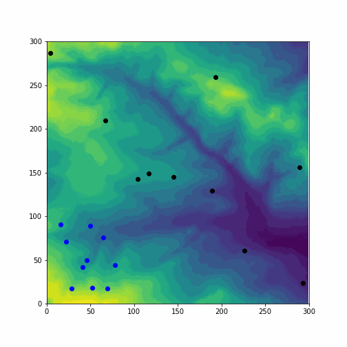

Hello, and welcome to my portfolio website for GEOG5990- Python for Geographical Information Analysis. This website shows the link to my GitHub repository for the Python Agent Based Modelling and instructions on how to run the codes within the GitHub page. The following files are included in this repository:
- The Model code: contains information about the agents, iterations given to them, and stopping conditions that ensure model is run efficiently.
- The Agent class code: agents are built and all behaviours such as how they move, share with their neighbours, eat, and breed to populate themselves.Two agent classes were created; one for the agents, and another for their predators (wolves).
- The Environment code: the space within which the agents and their predators (wolves) behave and interact with themselves. This is a raster grid of data, plotted with matplotlib to include colours.
Instructions to run the code:
- Download all files stated above to your local machine (all found on the GitHub page)
- For user interactivity, the code asks the user to input the:
- number of agents as integer between 0 and 100,
- number of iterations between 0 and 200, and
- number of wolves between 0 and 50.
- number of loops between 1 and 5 for timing.
- A tkinter window pops up, click the 'Model' button, then click on 'Run Model'
Note:User runs the model the number of times stated in their chosen loop (Agents are blue, Wolves are black in colour)
- Exit the model using the 'Click and Quit'button on the model frame or click the cross button at the frame edge
Sample animation (10 agents, 100 iterations, and 20 wolves) with colour change due to agents eating within the environment is shown below:
